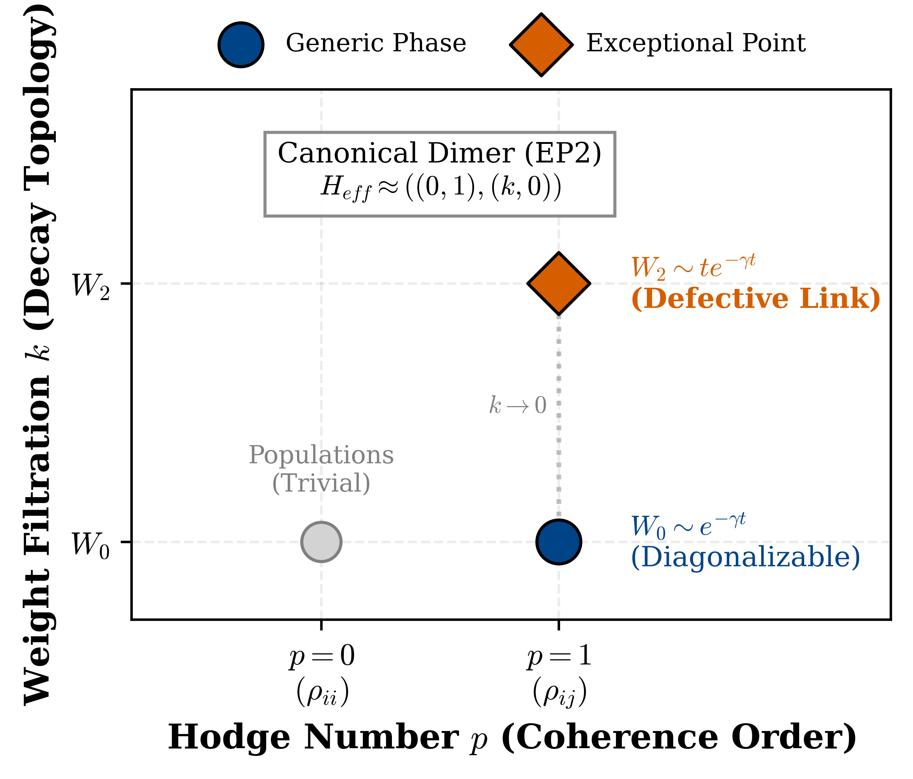
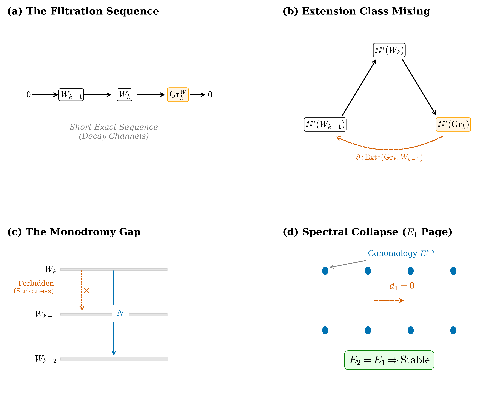
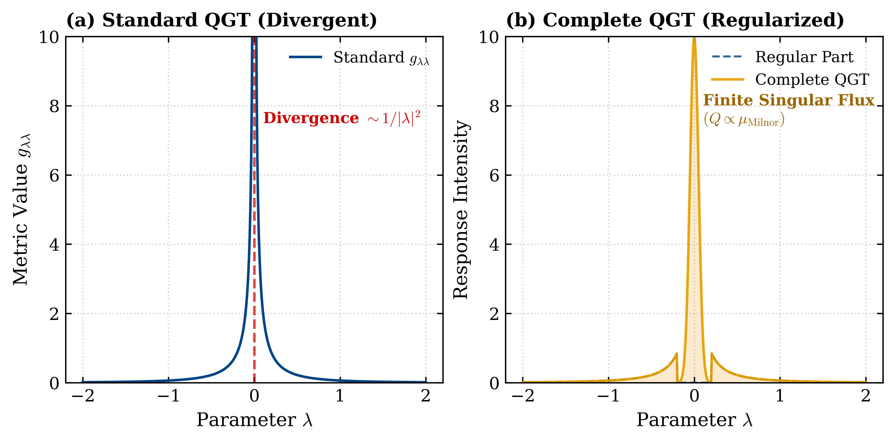
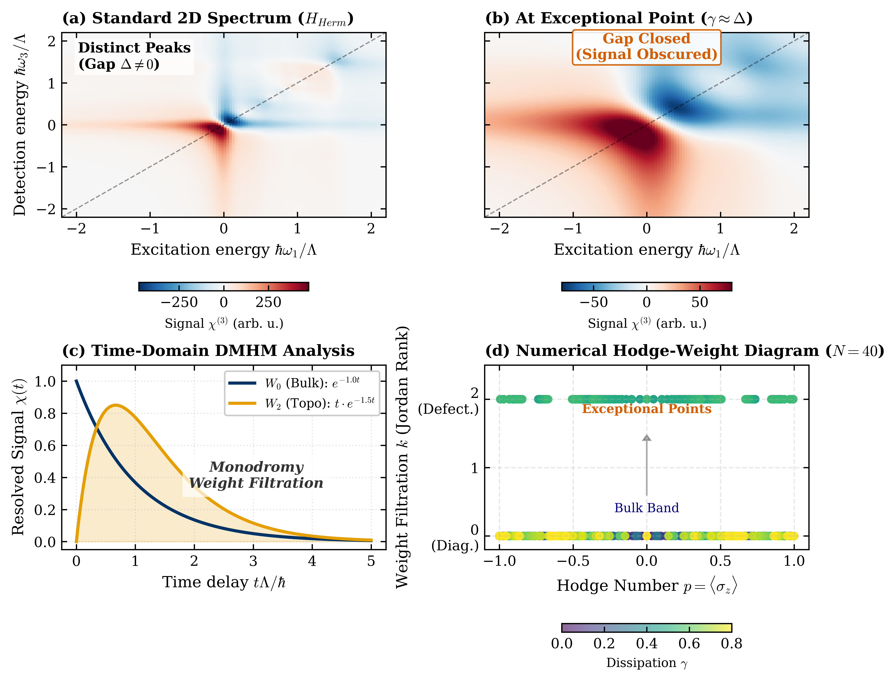

Definitions and main theorems of the Dissipative Mixed Hodge Module framework, the complete QGT construction, and the spectroscopy protocol are formalized in Lean 4, with a public repository.
Abstract
The geometric description of open quantum systems via the Quantum Geometric Tensor (QGT) traditionally relies on the assumption that the physical states form a differentiable vector bundle over the parameter manifold. This framework becomes ill-posed at spectral singularities, such as Exceptional Points, where the eigen-bundle admits no local trivialization due to dimension reduction. In this work, we resolve this obstruction by demonstrating that the family of Liouvillian superoperators $\mathcal{L}(k)$ over a complex parameter manifold $X$ canonically defines a regular holonomic$\mathcal{D}_X$-module} $\mathcal{M}$. By identifying the physical coherence order with the Hodge filtration and the decay rate hierarchy with the Kashiwara filtration, we show that the open quantum system underlies a Mixed Hodge Module (MHM) structure in the sense of Saito. This identification allows us to apply the Grothendieck six-functor formalism rigorously to dissipative dynamics. We prove that the divergence corresponds to a non-trivial cohomology class in $\text{Ext}^1_{\mathcal{D}_X}$, thereby regularizing the Quantum Geometric Tensor without ad-hoc cutoffs. Specifically, the “singular component” of the Complete QGT arises as the residue of the connection on the Brieskorn lattice associated with the vanishing cycles functor.
Problem
The Quantum Geometric Tensor of open quantum systems diverges at spectral singularities such as Exceptional Points. There the eigen-bundle has no local trivialization, so standard differential-geometric descriptions break down.
Approach
The family of Liouvillian superoperators over a complex parameter manifold is treated as a regular holonomic D-module carrying a Mixed Hodge Module structure in Saito's sense. Coherence order is identified with the Hodge filtration and the decay-rate hierarchy with the Kashiwara/weight filtration. The singular part of the QGT is defined as a residue on the Brieskorn lattice via vanishing cycles. Core definitions and theorems are formalized in Lean 4, organized in layers from abstract category theory to physical predictions.

Figure 1: The Canonical Hodge-Weight Stratification. Schematic classification of the local Liouvillian cohomology for a Dissipative Dimer at an Exceptional Point ( H_{\text{eff}}\sim\text{Jordan}_{2} ). The horizontal axis ( p ) denotes the Hodge number , distinguishing diagonal Populations ( p=0 ) from off-diagonal Coherences ( p=1 ). The vertical axis ( k ) denotes the Monodromy Weight . While g

Figure 5: Figure 5: Homological Resolution of the Topological Phase (The Diagram Chase). A step-by-step visualization of the proof provided in Appendix A.2 , demonstrating why the dissipative topology is robust. (a) The Filtration Sequence: The Short Exact Sequence of \mathcal{D} -modules, 0\to W_{k-1}\to W_{k}\to\text{Gr}_{k}\to 0 , representing the separation of decay channels. (b) The Derived T
Results
The author claims a regularized 'Complete QGT' that recovers the Fubini-Study metric away from singularities and has a finite singular component tied to the Tjurina/Milnor number. The paper also claims E1 degeneration of the spectral sequence, illustrated on an EP2 dimer and a Kitaev chain. A Lean 4 repository and a correspondence table between manuscript statements and Lean modules are provided.

Figure 2: Regularization of the Quantum Geometric Tensor (QGT) at a Spectral Singularity. (a) The Divergence Problem: The standard Fubini-Study metric g_{\lambda\lambda} (blue trace) exhibits a characteristic algebraic divergence ( \sim|\lambda|^{-2} ) as the system approaches the Exceptional Point ( \lambda\to 0 ), rendering the geometry ill-defined. (b) The Complete QGT: Application of the DMHM

Figure 3: Tomographic Resolution of Dissipative Topology via Monodromy Weight Filtration. (a) Hermitian Limit ( \gamma\ll\Delta ): Standard 2D spectroscopic map of the Kitaev chain in the weak dissipation regime. The topological phase is identifiable via characteristic peak splitting, reproducing standard results [ 44 ] . (b) The Exceptional Point Limit ( \gamma\approx\Delta ): The system driven t